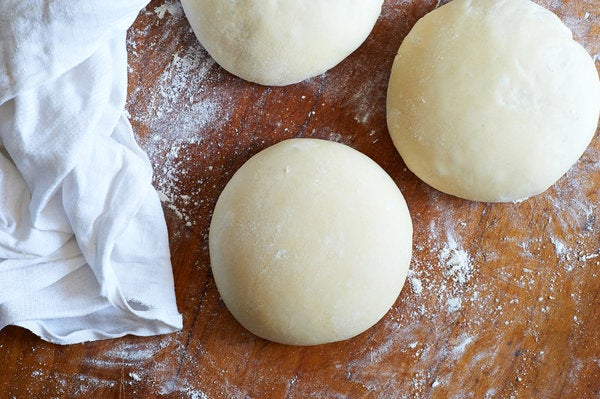

Pizza Dough
This versatile and delicous pizza dough is based on the recipe by the New York Times

Description
I was inspired to figure out pizza dough after my wife's BFF made us the tastiest homemade pizza crust ever. This recipe has served me well, and is a flavorful, crispy, yet puffy and chewy crust. This recipe is for 2 pizzas.
Ingredients
- 153 grams 00 flour (1 cup plus 1 tablespoon)
- 153 grams all-purpose flour (1 cup plus 1 tablespoon and 2 teaspoons)
- 8 grams fine sea salt (1 teaspoon)
- 2 grams active dry yeast (¾ teaspoon)
- 4 grams extra-virgin olive oil (1 teaspoon)
Steps
- In a large mixing bowl, combine flours and salt.
- In a small mixing bowl, stir together 200 grams (a little less than 1 cup) lukewarm tap water, the yeast and the olive oil, then pour it into flour mixture. Knead with your hands until well combined, approximately 3 minutes, then let the mixture rest for 15 minutes.
- Knead rested dough for 3 minutes. Cut into 2 equal pieces and shape each into a ball. Place on a heavily floured surface, cover with dampened cloth, and let rest and rise for 3 to 4 hours at room temperature or for 8 to 24 hours in the refrigerator. (If you refrigerate the dough, remove it 30 to 45 minutes before you begin to shape it for pizza.)
- To make pizza, place each dough ball on a heavily floured surface and use your fingers to stretch it, then your hands to shape it into rounds or squares. Top and bake on pizza stone (covering pizza handle thing with cornmeal to prevent sticking when entering in the oven) at the max temperature of the oven.